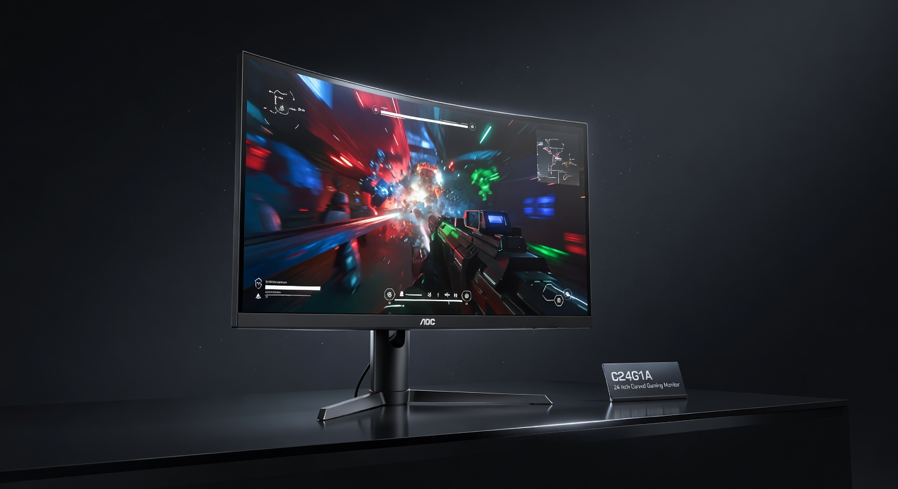
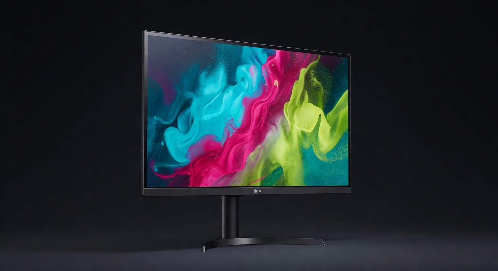
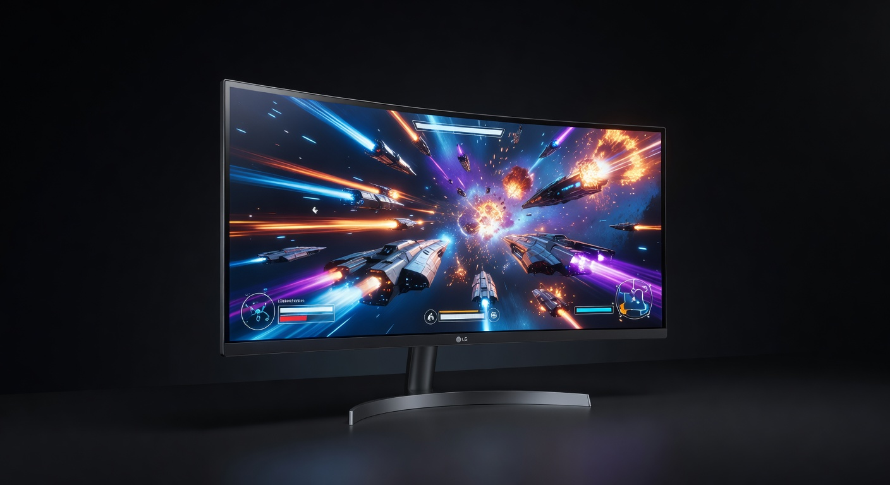
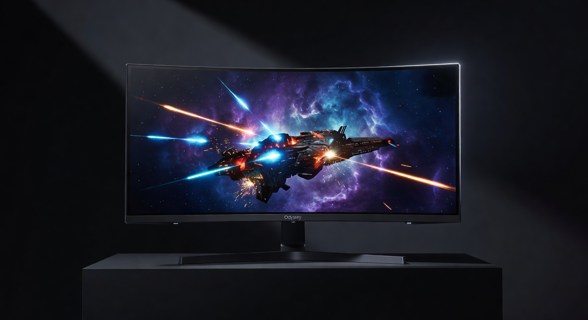

Best Gaming Monitors 2026: Top 5 Picks at Every Price Point
Your monitor is the window into every game you play — and yet most gamers spend more time researching their GPU than the screen it outputs to. Refresh rate, resolution, panel type, and response time all make real, visible differences in your gaming experience. We've tested the five best gaming monitors for 2026 across every budget tier — from $150 entry-level 144Hz to the $600 4K ultrawide setups that professional streamers use.
Jump to a Section
1. Best Budget Gaming Monitor (~$150)

The AOC C24G1A proves 165Hz gaming doesn't have to be expensive. The 24" curved VA panel delivers excellent contrast ratios (2000:1) — blacks look genuinely black, which matters for dark game environments. The 165Hz refresh rate (overclockable from 144Hz) is a significant upgrade from 60Hz for any competitive game. AMD FreeSync Premium eliminates screen tearing without needing a specific GPU brand. The best $150 gaming monitor money can buy.
Pros
- 165Hz at $149 is exceptional value
- VA panel: excellent contrast for dark games
- FreeSync Premium (works with most GPUs)
- Curved panel adds immersion
Cons
- 1080p limits visual clarity at 24"
- VA ghosting visible in fast motion
- No USB hub or built-in speakers
2. Best 1440p Gaming Monitor — The Sweet Spot (~$250)

1440p at 165Hz is the sweet spot of gaming monitors in 2026 — and the LG 27GP850-B is the best value at this tier. The IPS panel means excellent color accuracy and wide viewing angles. 1440p at 27" delivers noticeably sharper detail than 1080p without the GPU demand of 4K. 1ms GtG response time and Nano IPS technology reduce ghosting. NVIDIA G-Sync Compatible + AMD FreeSync Premium Pro means it pairs well with any GPU.
Pros
- 1440p IPS — noticeably sharper than 1080p
- Compatible with both Nvidia and AMD
- Excellent color accuracy out of box
- 165Hz is enough for any competitive game
Cons
- IPS glow visible in dark scenes
- Requires a capable GPU for 1440p@165Hz
- Stand adjust is limited (height only)
3. Best 4K Gaming Monitor (~$450)

4K gaming used to mean compromising on refresh rate. The LG 27GP950-B ends that tradeoff — 4K resolution at 160Hz via DisplayPort 1.4 (144Hz via HDMI 2.1). Nano IPS panel with HDR 600 delivers rich, wide color gamut and genuine HDR pop in supported titles. HDMI 2.1 support makes it excellent for PS5 and Xbox Series X at 4K. If you have the GPU to push it, this is the best 4K gaming monitor at this price.
Pros
- 4K + 160Hz — both, no compromise
- HDMI 2.1 for console 4K@120Hz
- HDR 600 — actual HDR, not fake HDR400
- Nano IPS: accurate color + fast response
Cons
- Requires RTX 3080/4070+ or RX 6800+ for 4K@160Hz
- $449 is a significant investment
- IPS glow in very dark content
4. Best Ultrawide Gaming Monitor (~$550)

The 34" ultrawide (21:9) format transforms the gaming experience in open-world, racing, and simulation games — wider peripheral vision, more immersive field of view, and the extra screen real estate eliminates the need for a second monitor for productivity. The LG 34GP83A's 160Hz IPS panel means you don't sacrifice speed for width. G-Sync compatible and FreeSync Premium Pro. If you're ready for ultrawide, this is the board to get.
Pros
- 3440×1440 fills your peripheral vision
- 160Hz — no speed compromise for width
- IPS panel: excellent colors + angles
- Replaces need for dual-monitor setup
Cons
- Some competitive games don't support ultrawide
- Requires powerful GPU for 3440×1440@160Hz
- Large physical footprint
5. Best Curved Gaming Monitor (~$350)

The Samsung Odyssey G5 at 32" hits the sweet spot for cinematic single-player gaming — large enough to be immersive, 1440p resolution makes it sharp enough at 32", and the 1000R aggressive curve wraps the screen into your natural field of view. VA panel contrast ratios (3000:1) make HDR content and dark games look dramatically better than IPS at the same price. 165Hz keeps competitive gaming viable.
Pros
- 32" at 1440p — immersive without being 4K-demanding
- 3000:1 contrast — stunning blacks
- 1000R aggressive curve wraps your vision
- FreeSync Premium for tear-free gaming
Cons
- VA ghosting visible in fast-paced FPS games
- Not officially G-Sync Compatible
- Color accuracy less precise than IPS
Quick Comparison: Best Gaming Monitors 2026
| Monitor | Price | Size | Resolution | Refresh Rate | Panel | Buy |
|---|---|---|---|---|---|---|
| AOC C24G1A | ~$149 | 24" | 1080p | 165Hz | VA Curved | Amazon → |
| LG 27GP850-B | ~$249 | 27" | 1440p | 165Hz | IPS Nano | Amazon → |
| LG 27GP950-B | ~$449 | 27" | 4K UHD | 160Hz | IPS Nano HDR | Amazon → |
| LG 34GP83A-B | ~$549 | 34" | 3440×1440 | 160Hz | IPS Curved | Amazon → |
| Samsung Odyssey G5 32" | ~$349 | 32" | 1440p | 165Hz | VA Curved | Amazon → |
Gaming Monitor Buying Guide: What Actually Matters
Resolution: 1080p, 1440p, or 4K?
1080p (Full HD) is fine at 24" — pixels are small enough to not be distracting. At 27" and larger, 1080p starts looking noticeably soft. 1440p (2K) is the 2026 sweet spot: sharper than 1080p at 27", runs well on mid-range GPUs (RTX 3060, RX 6600 XT), and the jump in clarity is immediately visible. 4K is stunning but requires a high-end GPU to hit acceptable frame rates in demanding titles.
Refresh Rate: 60Hz vs 144Hz vs 165Hz+
Going from 60Hz to 144Hz is the single biggest visual upgrade you can make to a gaming setup — motion looks dramatically smoother, and fast inputs feel more responsive. Going from 144Hz to 240Hz is a smaller but real improvement for competitive FPS players. For most gamers, 144Hz or 165Hz is the target. Above 240Hz provides diminishing returns that are difficult to perceive except in professional play.
Panel Type: IPS vs VA vs TN
IPS: Best color accuracy, widest viewing angles, fastest pixel response. Best for content creation + competitive gaming. VA: Best contrast ratios (3000:1+ vs IPS at 1000:1) — better for dark games, movies, HDR. Slightly more ghosting in fast motion. TN: Fastest response times but worst colors and viewing angles. Largely obsolete for gaming in 2026 — IPS has caught up on speed while retaining color quality.
G-Sync vs FreeSync vs FreeSync Premium
Both technologies eliminate screen tearing by synchronizing the monitor's refresh rate to your GPU's frame output. G-Sync (Nvidia certified) costs more but guarantees quality testing. FreeSync (AMD) and FreeSync Premium are open standards and now work on Nvidia GPUs as "G-Sync Compatible" through driver support. Most modern gaming monitors support both — look for "FreeSync Premium Pro" or "G-Sync Compatible" to confirm dual-vendor support.
Should You Get a Curved Monitor?
For single-player immersive games (RPGs, racing, open world), a curved monitor at 27"+ meaningfully increases immersion. For competitive FPS, flat is generally preferred — curved introduces slight distortion at the edges that some players find distracting in crosshair-centric play. Ultrawide curved (34"+ 21:9) is compelling for any single-player game that supports the aspect ratio.